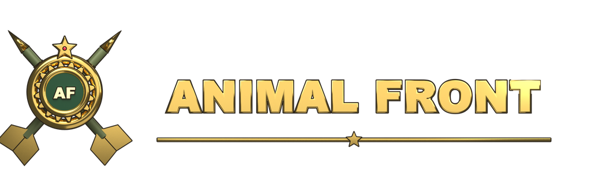
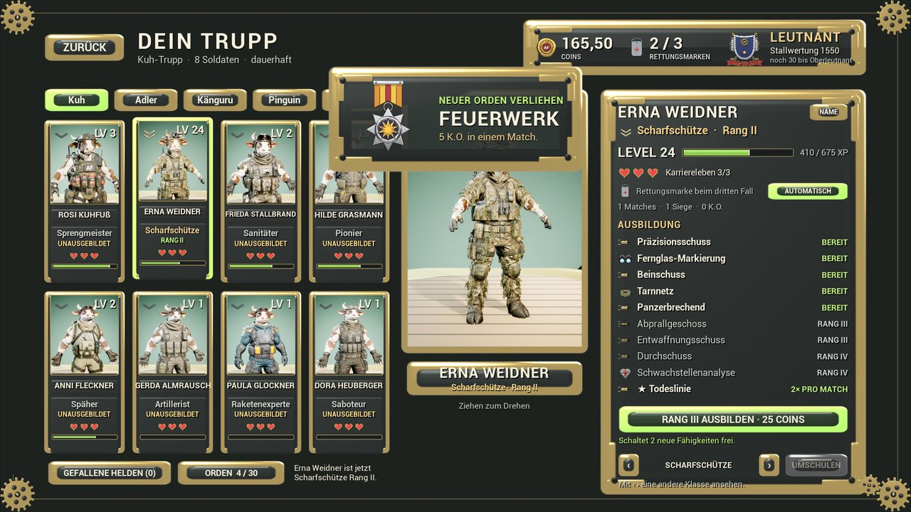
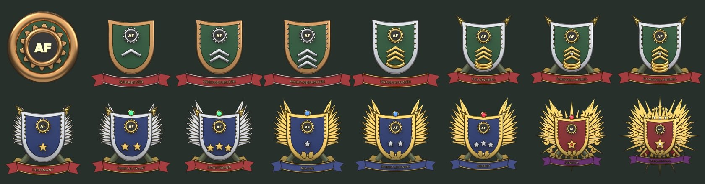
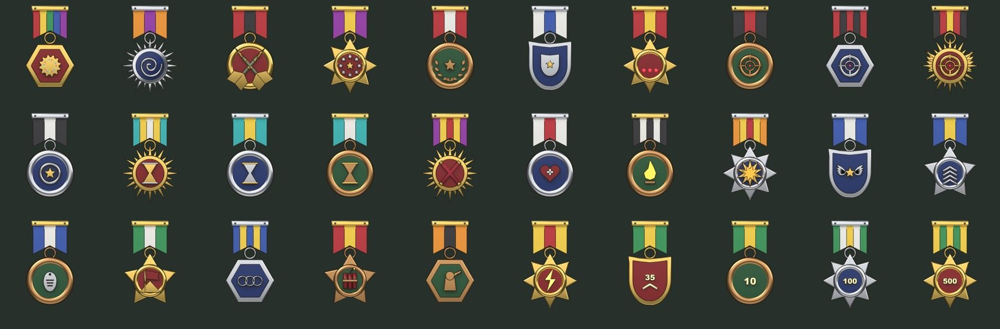

Dein Trupp. Dein Zug.
Rundenbasierte Taktik mit fünf Tierarten, Wind, Ballistik und zerstörbarer Deckung – und einem Trupp, der dich durch jedes Match begleitet.
IN ENTWICKLUNGDas Spiel
Fünf Arten
Kuh, Adler, Känguru, Pinguin und Krokodil – jede mit eigener Standardwaffe und eigenem Stil.
Dein Trupp
Acht dauerhafte Soldaten mit Namen, Level und Karriere. Wer dreimal fällt, kommt in die Ehrenhalle der gefallenen Helden.
15 Klassen · 150 Fähigkeiten
Vom Sprengmeister bis zum Lockvogel. Jede Klasse bildest du in vier Rängen aus und schaltest so neue Fähigkeiten frei.
Stallwertung
Offizielle Matches zählen für deine Wertung. 16 Dienstgrade vom Rekruten bis zum Feldmarschall und 30 Orden warten.
Modi
Duell, Jeder gegen jeden für drei oder vier, 2 gegen 2 und Mayhem mit 20 Spielern.
Arenen
15 große Karten mit Türmen, Kisten, Tunneln und Gelände, das Explosionen nicht kalt lässt.
Bilder aus der Entwicklung


